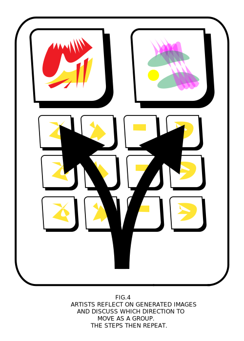

RESIDENCY
The cohort of artists will create a body of visual media which will be intentionally fed through a machine learning algorithm to produce new works.
The democratic process of curating the database will be the bulk of the residency.
After reviewing how the algorithms have synthesized their art, artists will discuss the direction they wish to lead the machine,
and as a community work toward specific aesthetic goals.
Each week the residents will come together with their new works and engage in the ritual of combining their artifacts.
This practice of deliberation is the focal point of the residency - machine learning models are dumb simplifiers which have no semantic
understanding of what they’re blending together. It will be the job of the artists to engage in these conversations and to use these tools
in a way which will actually amplify their work.
With each new addition of media to the database, the generated images will become more complex and representative of the diversity of images it has been exposed to.
OWNERSHIP
The database -and the images which are created from it- will be collectively owned. If media that is generated from the dataset is
sold the funds will be divided up among the members of the cohort equally. We hope to use this synthesis as a new way to promote radical collaboration. When pushed through different machine learning models this database could yield millions of distinct images - each one owned by the community collectively.
The point of this collaboration is not solely to generate art, but explore ways in which communities of creatives can leverage technology to create together. The model of creation is tethered to the community ownership element, the end result will be an artist owned cooperative owned by the cohort.
EXPERIMENTATION

It is our hope that we can continue to reiterate and experiment with the model from residency to residency. This residency is part of a Graduate Thesis being developed by Duncan Figurski at ITP - NYU. The development of this work will be documented arduously so that the lessons learned from this collaboration can be applied to future residencies.
Due to the democratic nature of the cohort, the residency will develop a charachter beyond what can be described here.
Applicants should be comfortable with change, and be ready to defend their rationalizations.
A setting like this demands trust, so please reach out and start a dilogue.
LOGISTICS

The Residency will start in February 2022 and continue for three months. Artists will be responsible for attending bi-weekly meetings in which they negotiate what media should be entered into the database. At the end of the residency there will be a showcase of the cohort's collaborative work accompanied by talks from the artists.
Applications will open in January of 2022, if you are interested in applying please leave your email below.
The first dataset will be compromised souly of visual images, and will use Generative Adversarial Networks in order to create new media.
Artists will be taught how to use these technologies themselves, we highly encourage applicants who have experimented with machine learning before.
We are specifically looking for artists who have a body of work in experimentation with abstract symbols, and are comfortable in discussing their process in an open setting.
The amount of work we will need to create in order for the networks to be coherent is substantial, for this reason it is important that artists abide by deadlines that are set by the cohort.
We are currently seeking grants and funding which will go toward: artists stipends, space rentals, supplies, operations, and printing media from the datasets.